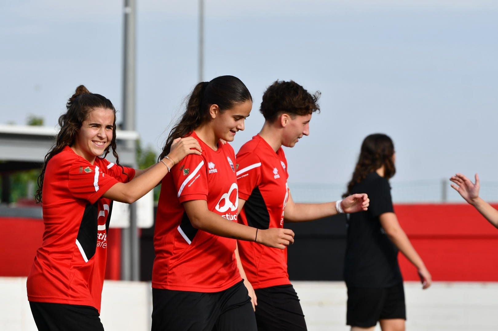

Era l'any 2018 i la situació a Alpicat en relació al futbol era del més normal, 135 jugadors apuntats a la base, disputant partits i gaudint d'aquest esport. Però una dada va fer rumiar a la junta directiva: entre aquests 135 jugadors només hi havia una noia.
Va ser durant aquella mateixa temporada on la junta va donar el pas, un pas que pocs pobles del Segrià donaven. Van començar a oferir entrenaments gratuïts a nenes per així fer una crida, amb l'objectiu de poder formar, la temporada següent, una secció femenina amb dos equips: un benjamí i un infantil-aleví.
Aquesta intenció d'obrir secció femenina al poble no era el primer cop, perquè durant la dècada dels 90 el club va comptar amb un equip amateur, però es va dissoldre al cap de 3 temporades.
Ara bé, estem al 2026 i ja en fan 8 anys des que el projecte va néixer. Hem anat veient com cada vegada disposem de més i més jugadores, i de més i més categories.
Una dècada de transformació
El camí fins aquí: vuit anys de feina silenciosa
El que avui sembla una realitat consolidada va ser, durant molts anys,una aposta incerta. Quan la junta directiva del Club Esportiu Alpicat va decidir el 2018 fer aquells primers entrenaments gratuïts per a nenes, ningú podia garantir que funcionaria. La resposta, però, va superar les expectatives. Les primeres sessions van omplir-se de nenes que, fins aleshores, no havien tingut l'oportunitat de jugar a futbol de manera organitzada al seu propi poble.
El primer pas va ser la creació dels equips de base. Les categories benjamí i aleví van ser les primeres a posar-se en marxa, amb entrenadors voluntaris i un pressupost molt limitat. Tot i les dificultats inicials, la resposta de les famílies va ser molt positiva. Les nenes tenien, per primera vegada, un espai propi dins d'un club que fins aleshores havia estat pensat, gairebé en exclusiva, per als nois.
Durant els primers anys, el projecte va créixer de manera progressiva. Es van anar incorporant noves categories, nous entrenadors i, sobretot, noves jugadores. La pedrera es construïa temporada rere temporada, amb la paciència que requereix qualsevol projecte esportiu seriós.
Cada temporada, el club renova la seva aposta per créixer, obrint les portes a totes les nenes que vulguin apropar-se al futbol.
La crida, a més, va prendre forma de vídeo per arribar a més famílies i fer-la encara més propera i accessible.
La convocatòria també va tenir ressò a altres xarxes socials, amplificant el missatge més enllà d'Instagram.
El 2021/22: el primer revés
El curs 2021/22 va suposar un punt d'inflexió dolorós però necessari. El primer equip femení de l'Alpicat, que havia estat competint de manera federada, no va poder continuar. La raó era clara: no hi havia prou jugadores formades a la base per garantir una plantilla estable i competitiva a nivell amateur. Va ser una decisió difícil però honesta per part de la directiva, que va preferir fer un pas enrere per poder-ne fer dos endavant.
Aquells anys de pausa competitiva a primer nivell no van ser, però, anys perduts, sinó el contrari, van servir per consolidar allò que mai havia estat sòlid del tot: la pedrera. Les categories inferiors van continuar funcionant, les jugadores van continuar creixent, i el projecte va seguir viu.
Quatre anys. Aquest és el temps que el club ha necessitat per refer els fonaments. Quatre temporades on l'èxit no es mesura en resultats de primer equip, sinó en el nombre de nenes que cada any renoven la fitxa, en els equips de base que van consolidant-se categoria rere categoria. Una feina discreta, sense focus ni titulars, però imprescindible per fer possible el que ara s'acosta.
2026: el retorn
Vuit anys després d'aquells primers entrenaments gratuïts, el Club Esportiu Alpicat torna a la competició femenina federada. Amb més de 50 jugadores repartides entre l'aleví, l'infantil i dos equips juvenils, el club considera que ara sí té la base suficient per sostenir un equip de primer nivell de manera viable i amb projecció de futur.
El club compta actualment amb les següents categories femenines:
- Equip aleví
- Equip infantil
- Equip juvenil A
- Equip juvenil B
- Equip amateur (nou)
La Segona Divisió Femenina de la Federació Catalana de Futbol serà l'escenari del retorn. Una categoria que exigeix regularitat, compromís i profunditat de plantilla, tres coses que, segons el president David Siuraneta, el club ara pot garantir. La plantilla es conformarà amb una barreja de jugadores formades a la casa —que faran el salt des de les categories juvenils— i jugadores que ja havien vestit la samarreta de l'Alpicat en etapes anteriors i que ara tornen amb ganes de reprendre allò que va quedar aturat.
Distribució d'equips femenins amateurs a les Terres de Lleida
Font: Elaboració pròpia a partir de dades federatives.
El club va anunciar el seu retorn a la competició a través de les xarxes socials, amb un cartell que va generar una gran resposta entre l'afició.
Per a moltes d'elles, tornar significa tancar un cercle. Per a les més joves, és l'oportunitat de demostrar que anys d'entrenament i sacrifici a la base tenien un sentit. "És el moment", repetia Siuraneta, i en el to de les seves paraules hi havia més que una simple declaració d'intencions: hi havia la certesa de qui ha vist créixer un projecte des dels seus fonaments i ara en veu els fruits.
La resposta no s'ha fet esperar. En pocs dies des de l'anunci, ja hi ha una onzena de jugadores interessades a formar part de la plantilla. El nucli del nou equip es conformarà amb quatre jugadores que faran el salt des del juvenil, a les quals s'hi sumaran algunes de les entrenadores actuals de la secció femenina, que van viure l'etapa amateur anterior com a jugadores i ara tornaran a vestir-se de curt. Una plantilla que, si es consolida, serà el reflex exacte del que ha estat aquest projecte des del principi: fet de casa, fet amb continuïtat.

Un referent per al Segrià
Més enllà d'Alpicat, el projecte té una dimensió que val la pena destacar. Al Segrià, el futbol femení de base ha estat històricament minoritari, amb pocs clubs disposats a invertir en categories femenines quan els recursos eren limitats. L'aposta de l'Alpicat el 2018 va anar a contracorrent d'aquesta tendència, i avui és vista per molts com un exemple de com es pot fer créixer el futbol femení en un municipi petit.
El model que ha seguit el club —entrenaments gratuïts per atraure nenes, construcció pausada de la base, i paciència per no cremar etapes— és, en essència, el mateix que segueixen els clubs que han aconseguit crear seccions femenines sòlides i duradores. No és un model espectacular ni immediat, però és el que funciona.
Ara, quan el primer equip torni a competir, ho farà sobre uns fonaments que van trigar vuit anys a construir-se. I això, en el món del futbol, és exactament com s'ha de fer.
El futur es planteja ambiciós. Amb la mirada posada en les competicions nacionals, el club no perd l'essència: formar jugadores, però sobretot, persones compromeses amb els valors de l'esport.
L'objectiu per a aquesta primera temporada no és cap altre que reprendre el camí amb calma, créixer pas a pas i tornar a fer-se un lloc en la competició femenina federada. Sense presses, sense cremar etapes. Exactament com ho han fet sempre.